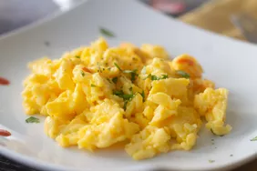

Scrambled Eggs

Fluffy Scrambled Eggs
Scrambled eggs is a dish made from eggs (usually chicken eggs), where
the whites and yolks have been stirred, whipped, or beaten together
typically with salt, butter or oil, and sometimes water or milk, or
other ingredients, then heated so that the proteins denature and
coagulate, and they form into "curds".
Ingredients
Step by step Instructions
- Whisk eggs with salt until completely combined and very foamy
- Melt butter in skillet over low heat
- Add whisked eggs and cook while stirring frequently for 2-3 minutes
- Remove scrambled eggs from pan before they begin to look dry